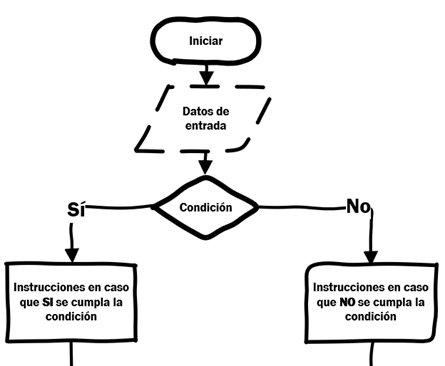
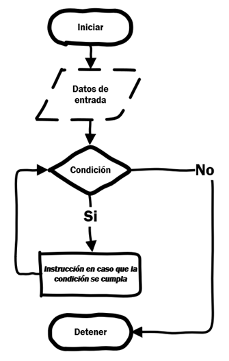

#Leer números ingresados por el usuario
n1 = int(input("Ingrese un número: "))
n2 = int(input("Ingrese un número: "))
print("Suma = ", n1 + n2)
print("Resta = ", n1 - n2)
print("Multiplicación = ", n1 * n2)
print("División = ", n1 / n2)
print("Exponente = ", n1 ** n2)
print("División entera = ", n1 // n2)
print("Módulo = ", n1 % n2)Deep Learning
Sentencias básicas en Python
1 Instalación
Instalar python 3.X mediante el framework de ANACONDA
Para actualizar anaconda, se abre la línea de comandos (Anaconda prompt)
conda update condaconda update --all
Además utilizar el comando conda para instalar los paquetes que utilizaremos durante esta parte del curso (se debe usar la línea de comandos):
conda install numpyconda install scipyconda install matplotlibconda install pandasconda install scikit-learnconda install statsmodels
Para la programación podremos utilizar la IDE de Python llamada SPYDER o los notebooks de Jupyter, que vienen instalados con anaconda. También podremos utilizar Google Colab.
Si los paquetes ya se encuentran instalados, se utiliza el comando
conda update nombre_paquetepara actualizarlos.La utilidad de los paquetes es la siguiente:
Numpy: utilizado para manipulación matricialScipy: posee herramientas estadísticas y de computación científicaMatplotlib: utilizado para graficarPandas: estructuras de datos para hacer estudios estadísticosScikit-learn: Herramienta para machine learning y minería de datosStatsmodels: también posee herramientas estadísticas y de computación científica
2 Introducción
2.1 Operadores Aritméticos
| Símbolo | Significado |
|---|---|
+ |
Suma |
- |
Resta |
- |
Negativo |
* |
Multiplicación |
** |
Exponente |
/ |
División |
// |
División entera |
% |
Módulo |
Ejemplo:
Solicitar que el usuario ingrese dos números y entregar los resultados de los diferentes operadores.
Ejemplo:
Dado dos números ingresados por el usuario escribir el resultado de la división con una parte entera y con la parte fraccional.
2.2 Operadores relacionales
| Símbolo | Significado |
|---|---|
== |
Igual que |
!= |
Distinto que |
< |
Menor que |
> |
Mayor que |
<= |
Menor o igual que |
>= |
Mayor o igual que |
2.3 Operadores Lógicos y tabla de valores
| Símbolo |
|---|
and |
or |
not |
xor (^) |
| and | or | xor | ||||
|---|---|---|---|---|---|---|
| False | True | False | True | False | True | |
| ——- | ——- | ——- | ——- | ——- | ——- | ——- |
| True | False | True | True | True | True | False |
| False | False | False | False | True | True | False |
| not | |
|---|---|
| False | True |
| True | False |
Ejemplo:
Solicitar al usuario que ingrese valores lógicos aplicar los operadores lógicos.
#Leer números ingresados por el usuario
p = bool(int(input("Ingrese 0 (Falso) o 1 (Verdadero) :")))
q = bool(int(input("Ingrese 0 (Falso) o 1 (Verdadero) :")))
print("p =",p, " not p = ", not p)
print("q =",q, " not q = ", not q)
print(p," and ", q, " es ", p and q)
print(p," or ", q, " es ", p or q)
print(p," xor ", q, " es ", p ^ q)2.4 Precedencia de los operadores
| Prioridad | Operador | Descripción |
|---|---|---|
| 1 | ** | Exponente |
| 2 | + - | Símbolo unario positivo o negativo |
| 3 | * / % // | Multiplicación, división, módulo |
| 4 | + - | Suma y resta |
| 5 | & | operador lógico bitwise and |
| 6 | |^ | operador lógico bitwise or, xor |
| 7 | <= < > >= | operadores de comparación |
| 8 | <> == ! = | operadores de igualdad. |
| 9 | = %= /= *= | operadores de asignación |
| 9 | //= -= += **= | operadores de asignación |
| 10 | is is not | operadores de identidad |
| 11 | in in not | operadores de membresía |
| 12 | not or and | operadores de lógicos |
Ejemplo:
Cuál es el resultado de la siguiente operación:
\[3 * 5 / 2 - 4 ** 2 <= 5 - 3 / 2 ** 3\ and\ True\]
3 Manejo básico de objetos
En Python, todo es un objeto, y todo objeto tiene tres propiedades: identidad, tipo, y valor. La identidad es una dirección dada por Python que no cambia. El tipo puede ser cualquiera de los siguientes.
None: representa la ausencia de un valor.Números: Python tiene tres tipos de números:
Entero
Punto flotante (puede almacenar números con decimales)
Complejo (puede almacenar la parte real e imaginaria de un número
Secuencias: Son colecciones ordenadas de elementos. Hay tres tipos de secuencias en Python:
Cadenas (strings)
Tuplas (tuples)
Listas (lists)
Las cadenas de caracteres son muy utilizadas en python. Por ejemplo, creemos una variable con algún nombre.
Podemos concatenar varias cadenas de caracteres, y de varias formas, añadiendo otra variable que almacene el apellido de Francisco:
3.1 Listas
Una lista en Python es una colección de objetos, y representa la secuencia más general provista por el lenguaje. Las listas son modificables. Esto último quiere decir que un objeto de una posición particular puede ser cambiado por otro.
Puede ser una colección de elementos similares (homogéneos):
Puede contener elementos diferentes, (heterogéneos):
Puede ser vacía:
Puede contener a otra lista:
3.2 Tuplas
Una tupla contiene elementos que pueden ser tratados individualmente o en grupo. Por ejemplo, (x, y), puede ser impresa usando la función print(). Los elementos de la tupla pueden asignados de la siguiente forma:
Los elementos de la tupla pueden ser asignados a objetos individuales:
También se puede hacer sin usar los paréntesis:
Se pueden usar los elementos de la tupla de manera individual
El primer elemento de la tupla es 2El segundo elemento de la tupla es 3Un detalle importante es que las tuplas son inmutables, es decir, un elemento de la tupla no puede ser cambiado de valor una vez que ya está definido:
La operación + en las tuplas, sirve para concatenar dos o más tuplas
3.3 Manipular listas y tuplas
La funcionalidad para extraer partes de alguna lista o tupla es análoga a lo visto en R, supongamos que tenemos una variable denominada numeros, entonces
3.3.1 Métodos para añadir elementos a listas
Método append
Método insert
3.3.2 Métodos para eliminar elementos de listas
Método pop
Método remove
3.4 Ejercicios
Escriba un programa para intercambiar dos números.
Pregunte al usuario las coordenadas de un punto en el plano y encuentre la distancia desde el origen \((0,0)\).
Pregunte al usuario por dos puntos (coordenadas) y encuentre la distancia entre ellas.
Pregunte al usuario por tres puntos y halle si son o no colineares.
Dada la pregunta 4., si los puntos no son colineares, entonces halle el tipo de triángulo que forman (equilátero, isósceles o escaleno).
En la pregunta anterior, determine si el triangulo es de ángulo recto.
En la pregunta número 4., encuentre los ángulos del triángulo.
Pregunte al usuario para ingresar dos puntos y encuentre si están a igual distancia que desde el origen.
En la pregunta número 8., encuentre le ángulo entre la línea que une los puntos y el origen.
4 Estructuras de Control
Una estructra de control es un bloque de código que permite agrupar instrucciones.
Se tienen dos tipos de estructuras de control:
Estructuras de control condicionales
Estructuras de control iterativas
En python, los bloques de código se identifican con la identación que consiste en añadir espacios en blanco:
Se puede usar la tecla de tabulación, o espacios, pero se debe ser consistente con el espaciado.
La identación indicará que las instrucciones forman parte de una misma estructura de control.
4.1 Estructuras de control condicionales
Las estructuras de control condicionales son aquellas que permiten evaluar evaluar si se cumple una condición y de esta forma decidir qué acción ejecutar
Estructuras de control condicionales
Ejemplo
EL costo de inscripción a un curso de verano es de $5000, sin embargo si la persona tiene carnet de estudiante, entonces se le aplica un descuento del 20%. Mostrar el monto total a pagar.
Ejemplo
A través del análisis de la discriminante \(\Delta = b^2 - 4ac\) determinar si la ecuación cuadrática
\[ ax^2 + bx + c = 0 \]
tiene 2 soluciones reales (\(\Delta>0\)), 1 solución real (\(\Delta=0\)) o 2 soluciones imaginarias (\(\Delta<0\)). El usuario ingresa los valores para las variables a, b y c.
Condición IF y ELSE: ¿Qué pasaría si que queremos que se ejecute otra instrucción en caso que no se cumpla la condición?. En este caso debemos utilizar la sentencia ELSE de la siguiente manera:
Primeramente, declaramos nuestra condición IF como se detalló en la sección anterior
Seguidamente escribimos “else” más dos puntos
Detallamos las instrucciones que deseamos ejecutar, recordar presionar tabulación antes.
Condición ELIF: Si deseamos ejecutar más de una condición debemos ejecutar la sentencia ELIF. Es una contracción de ELSE IF la cual se ejecuta en el siguiente orden:
Primeramente, se evalúa la condición IF.
Si la condición de IF es cierta se ejecutará su instrucción y para la condición.
Pero en caso que la condición IF no se cumpla se evaluará la condición ELIF.
En caso que las condiciones de IF y ELIF no se cumplan se ejecutará las instrucciones de ELSE.
Estructuras de control condicionales más complejas
Ejemplo:
Dada la nota final del estudiante indicar si el estudiante aprobó la asignatura con nota superior o igual a 4.0 o reprobó la asignatura con nota inferior a 4.0.
Ejemplo:
Si queremos hacer un código que nos permita el ingreso dependiendo de la edad podríamos hacerlo así:
4.2 Ciclos iterativos (for y while)
Estructuras de ciclos iterativos
Ciclos FOR:
Permiten ejecutar un número determinado de iteraciones, definidas a priori.
Para usar el ciclo FOR:
Escribimos “for”.
Definimos una variable donde se guardara el valor a iterar en cada ciclo.
Definimos el elemento a iterar que debe tener una longitud finita como un rango o lista.
Cerramos con dos puntos.
Ciclos WHILE:
El ciclo WHILE ejecuta un fragmento de código mientras una condición preestablecida se cumpla.
Para ejecutar un ciclo WHILE se debe:
Escribir “while” primeramente
Seguidamente se escribe la condición a evaluar
Se cierra la sentencia con dos puntos
4.3 Ejercicios Condicionales
Pedir un numero y mostrar si es par o impar.
Solicitar dos números y mostrar cual es el número mayor y menor.
Pedir un usuario y un password, verificar si estos son
adminy12345respectivamente, si esto ocurre mostrar un mensaje deBienvenidoen caso contrarioAcceso denegado.Pedir en ingreso de tres calificaciones y mostrar un mensaje de APROBADO si su promedio es mayor a 50 y REPROBADO en caso contrario.
Ingresar un numero de día de semana del uno al siete y mostrar si es lunes, martes, miércoles, etc.
En una fábrica de computadoras se planea ofrecer a los clientes un descuento que dependerá del número de computadoras que compre. Si las computadoras son menos de cinco se les dará un 10% de descuento sobre el total; si el número de computadoras es mayor o igual a 5 pero menos de diez se otorga un 20%; si son 10 o mayor se dará un 40% de descuento. El precio de cada computadora es de 500$. Solicitar el número de computadoras compradas y mostrar el porcentaje de descuento y total.
4.4 Ejercicios Ciclos iterativos
Pedir un numero e imprimir todos los números pares entre 0 y el numero ingresado
Pedir un numero y mostrar su factorial.
Leer números enteros de teclado, hasta que el usuario ingrese el 0. Finalmente, mostrar la sumatoria de todos los números positivos ingresados.
Escriba un programa que pida números enteros mientras sean cada vez más grandes si introduce uno menor terminar el programa y mostrar la suma de todos.
Escribir un programa que solicite el ingreso de una cantidad indeterminada de números mayores que 1, finalizando cuando se reciba un cero. Imprimir la cantidad de números impares ingresados.
Crear un programa que permita al usuario ingresar los montos de las compras de un cliente (se desconoce la cantidad de datos que cargará, la cual puede cambiar en cada ejecución), cortando el ingreso de datos cuando el usuario ingrese el monto 0. Si ingresa un monto negativo, no se debe procesar y se debe pedir que ingrese un nuevo monto. Al finalizar, informar el total a pagar teniendo que cuenta que, si las ventas superan el total de $1000, se le debe aplicar un 10% de descuento.
5 Funciones
Si se necesita efectuar una tarea de programación que considera mayor complejidad, el poder dividir esa tarea en otras más pequeñas y más simples, ayudará a que el código sea más sencillo de escribir.
Las funciones tienen argumentos, los cuales denotan o que se ingresa a la función; es decir, el input de la función.
El valor de retorno de una función puede o no existir de manera explícita. Si el valor es explícito, éste será el resultado en la función. De lo contrario, un objeto vacío será el output de la función
5.1 Sintáxis
La sintáxis básica para crear una función es la siguiente:
Nota: Cuidado con la identación!
5.2 Ejemplos
Ejemplo:
Programe una función que mutiplica dos números pasados como argumentos
Ejemplo, un poco más difícil:
Dada una lista, es posible crear una función que busque un elemento en una lista. Por ejemplo, si se ingresa la lista [1,2,3,4,5,6] y el valor 4, la función debería mostrar la posición 3 (recordando que las posiciones son contadas desde el 0). Encuentre el error del código que se presenta a continuación para que muestre la posición de lo encontrado, a partir del 0.
5.3 Ejercicios
Escriba una función que calcule la media de \(n\) números ingresados por el usuario.
Escriba una función que calcule la moda de \(n\) números ingresados por el usuario.
Escriba una función que calcule la mediana de \(n\) números ingresados por el usuario.
Escriba una función que calcule la desviación estándar de \(n\) números ingresados por el usuario.
Escriba una función que encuentre el máximo de una lista de números ingresada por el usuario.
Escriba una función que encuentre el mínimo de una lista de números ingresada por el usuario.
6 Gráficos en Python: matplotlib
Como lo sugiere su nombre (en inglés), matplotlib es una librería de gráficos de python. Es útil para mostrar resultados, para estudiar el comportamiento de funciones, etc.
6.1 Gráfico de líneas
Usando la función plot(), se puede crear un gráfico de línea. Se puede definir la cuadrícula, el eje \(x\) e \(y\), sus etiquetas, escala, título, y opciones de visualización.
Graficando un arreglo (lista)
6.2 Gráficos múltiples
Si se quiere graficar múltiples líneas en un mismo gráfico, simplemente se llama a la función plot() múltiples veces.
import matplotlib.pyplot as plt
import numpy as np
t = np.arange(0.0, 20.0, 1)
s = [1,2,3,4,5,6,7,8,9,10,11,12,13,14,15,16,17,18,19,20]
s2 = [4,5,6,7,8,9,10,11,12,13,14,15,16,17,18,19,20,21,22,23]
plt.plot(t, s); plt.plot(t, s2);
plt.xlabel('Item (s)'); plt.ylabel('Valor')
plt.title('Gráfico de líneas de Python: Graficando números')
plt.grid(True)
plt.show()La función subplot() puede ser llamada para graficar dos o más gráficos en una figura. La librería soporta todo tipo de sub-gráficos, incluyendo horizontales (\(n \times 1\)), verticales (\(1 \times n\)) o cuadriculados de (\(n \times m\)).
#Ejemplo para una cuadrícula de 2 x 1
import matplotlib.pyplot as plt
from pylab import *
t = arange(0.0, 20.0, 1)
s = [1,2,3,4,5,6,7,8,9,10,11,12,13,14,15,16,17,18,19,20]
s2 = [4,5,6,7,8,9,10,11,12,13,14,15,16,17,18,19,20,21,22,23]
plt.subplot(2, 1, 1)
plt.plot(t, s)
plt.ylabel('Valor'); plt.title('Primer gráfico')
plt.grid(True)
plt.subplot(2, 1, 2)
plt.plot(t, s2)
plt.xlabel('Item (s)'); plt.ylabel('Valor'); plt.title('Segundo gráfico')
plt.grid(True)
plt.show()6.3 Gráficos de dispersión
Matplotlib tiene una función para crear gráficos de dispersión, o en inglés, scatterplots, llamada scatter(). Un gráfico de dispersión es un tipo de gráfico que muestra los datos como colección de puntos en el espacio. La posición de un punto depende de su valor 2-dimensional. donde cada valor es una posición en el eje horizontal y vertical.
7 Dataframes en Python: pandas
- Un dataframe es un “marco de datos”
- Un dataframe es una estructura de dos dimensiones que pueden ser modificadas.
- Los datos que contiene un dataframe pueden ser o no heterogéneos.
- Los datos son alineados en una estructura de tabla en filas y columnas.
- Los tres componentes principales de un dataframe son los datos, filas y columnas.

Ejemplo de Dataframe
Ahora emplearemos uno de los paquetes de Python asociado al trabajo con Dataframes, el paquete Pandas:
data: los datos pueden tomar varias formas, como arreglos de numpy, series, listas, diccionarios, etc.index: para la etiqueta de las filas, Index es usada para la planilla resultante de datos. La opción por defecto tomanp.arrange(n)si la indexación no es ingresada.columns: Para las etiquetas de la columna, la sintaxis opcional por defecto esnp.arrange(n). Esto es verdadero sólo si ninguna indexación es ingresada.dtype: El tipo de dato para cada columna.copy: este comando es usado para copiar los datos, si la opción por defecto esFalse.
Crear dataframe vacío
Crear un dataframe desde una lista
7.1 Creación de dataframes
Crear un dataframe desde un diccionario de ndarrays (arreglos)/listas
Todos los
ndarraysdeben ser del mismo largo. Si la indexación es ingresada, entonces el largo de los índices deben ser iguales al largo de los arreglos.Si la indexación no es ingresada, entonces por defecto, la indexación será
range(n), donde \(n\) es el largo del arreglo.
Crear un dataframe desde una lista de diccionarios
Una lista de diccionarios puede ser ingresada como input para crear el dataframe. Las claves del diccionario son por defecto tomadas como nombres de las columnas.
#Ejemplo 3: Un ejemplo más completo con lista de diccionarios,
#índices de fila y columna
import pandas as pd
data = [{'a': 1, 'b': 2},{'a': 5, 'b': 10, 'c': 20}]
#Con dos índices de columna, valores iguales a las claves del diccionario
df1 = pd.DataFrame(data, index=['first', 'second'], columns=['a', 'b'])
#Con dos índices de columna con un índice con otro nombre
df2 = pd.DataFrame(data, index=['first', 'second'], columns=['a', 'b1'])
print (df1)
print (df2)Nota: El data frame df2 es creado con una columna de índices distinta que la clave del diccionario. Entonces, el rellenado de NaNs yace en su lugar. Mientras que df1 es creado con la columna índices igual a la de las claves del diccionario.
Crear un dataframe desde una lista de diccionarios
7.2 Manipulación de dataframes
Selección de columna
Adición de columna
import pandas as pd
d = {'one' : pd.Series([1, 2, 3], index=['a', 'b', 'c']),
'two' : pd.Series([1, 2, 3, 4], index=['a', 'b', 'c', 'd'])}
df = pd.DataFrame(d)
# Agregando la columna
print ("Agregando una nueva columna agregando una Serie:")
df['three']=pd.Series([10,20,30],index=['a','b','c'])
print (df)
print ("\nAgregando una nueva columna usando una columna existente en el dataframe:")
df['four']=df['one']+df['three']
print (df)Eliminar columna
# Usando el dataframe anterior, eliminaremos una columna.
# usando la función 'del'
import pandas as pd
d = {'one' : pd.Series([1, 2, 3], index=['a', 'b', 'c']),
'two' : pd.Series([1, 2, 3, 4], index=['a', 'b', 'c', 'd']),
'three' : pd.Series([10,20,30], index=['a','b','c'])}
df = pd.DataFrame(d)
print ("Nuestro dataframe es:")
print (df)
# using del function
print ("\nEliminando la primera columna usando la función del:")
del df['one']
print (df)
# using pop function
print ("\nEliminando otra columna usando la función pop:")
df.pop('two')
print (df)Agregar, eliminar y seleccionar fila
Seleccionar múltiples filas (slice)
Agregar filas (append)
Eliminar filas (drop)
7.3 Ejercicios
Escriba una función para crear y mostrar un dataframe unidimensional.
Escriba un programa para sumar, restar, multiplicar y dividir dos series de pandas. (use pd.Series).
Consiga el entero más pequeño o igual a la división de lo que se ingrese
Escriba un programa para convertir un diccionario a una serie de pandas.
Escriba un programa para calcular la media y la desviación estándar de una Serie de pandas dada.